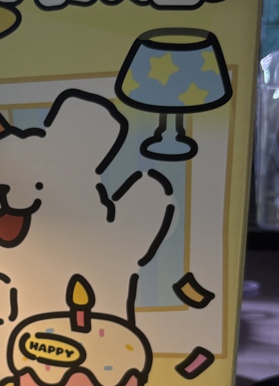

结 缘
姚悦近来可安好？说起来我们也是结缘了呢！真的挺意外居然能在比赛的时候碰到你。我可能话有点多，先一点点说吧。首先祝你生日快乐呀！我也不知道买什么礼物比较好，就挑了这个灯。留个悬念，猜猜我为什么买这个灯？嘿嘿！突发奇想写下纸质版信件，太久没写字加上本身字丑别介意哈。
我记得你说能静下心来读书会很好，不过我感觉你应该也是挺忙的，看你那个课表还要加上实验室，彻彻底底有福了。所以我在选书的时候就想着选篇幅较短的，我本来想介绍那些满怀美好情感和美妙的故事的书，但是可能我平时看那些也有点少，再加上悬疑这题材很少找到那些美满的结局的。我本来想选《恶意》但是感觉有点黑暗了还是算了。所以我选择了《世透》这本书，其实这本书算我第一次看轻小说，算不上好看，但是有点小巧思。然后对比起另一本《白夜行》我觉得可能白夜行厚度更深，但是篇幅也是比较长，而且我觉得如果读小说没有连续读，中间间断了一定时间可能有失兴趣，所以还是挑一本篇幅更短的。后续你有兴趣可以去读一下《白夜行》不过也是黑暗的一匹，这本更是给我整鸡皮疙瘩起来了，请期待故事的发展！
不知道你们宿舍会不会这样，明明开灯了，但是桌子上还是好暗。不过我有时候也喜欢躺床上看书。所以我想送个小夜灯给你，小狗在照亮的同时也能陪伴着你一起看书！有点梦幻主义了属于是。
其实一开始我都有点小怕，我记得我们都没认识多久，然后你就说来找我玩。我都没敢回应你，怕你给我整个杀猪盘。不过后来了解后感觉你是个靠谱的人。其实从你的交谈中就能体会到你是一个很好的人，我觉得是一个真的真的是一个很负责、很善良、很努力的人，无论是比赛还是对待生活中遇到的各种事。从智能车硬件大手子到电赛承当视觉任务，从遇到神人室友到最后还是帮她搬东西，迈卡好呐！也不知道是悬疑书看多了还是怎么了，我觉得文字总会透露出一个人。你不用担心招待不周什么的，我觉得随意就行了啊，不然我会不太好意思的，而且看你好不容易放假了还得陪我。
其实说来也是惭愧，之前大学两年基本上也没看啥书，大一的时候装装样子，后来也断了好长的时间，但是今年暑假对我其实是一个很饱和的暑假，我感觉重拾起好多东西，我看完了4本书，做着我喜欢的事，之前感觉总是没能做到自己想干的事，希望你也能找到自己热枕的事情，相信你一定能实现自己的目标，期待你的下一次成功——国一佬！！！有什么好玩的事或者其他都可以来找我吐槽。最后祝福你越努力越幸运。